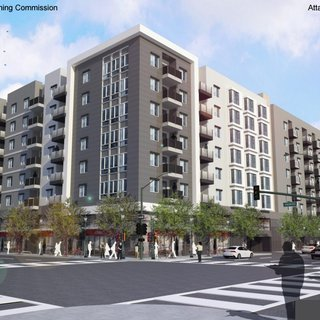

East Bay
San Francisco
Peninsula
South Bay
Elsewhere
East Bay
Berkeley's Homeless Mayoral Candidate Hits the Airwaves
Aug 24, 2016
Berkeley Faces Federal Lawsuit Over Post Office Sale
Aug 23, 2016
New Project With Ample Parking Planned for Uptown Oakland
Aug 22, 2016
Oakland Moves Forward on MacArthur Transit Village
Aug 11, 2016

Oakland Delays 416 Units in Chinatown
Aug 4, 2016
Rents Begin Declining in Some Bay Area Cities
Aug 2, 2016
Park Would Potentially Replace Apartments in Lafayette
Jul 25, 2016
Berkeley Says No: College Town Rejects Triplex, May Incur Legal Action
Jul 18, 2016
Construction Site In Emeryville Burns Down
Jul 18, 2016